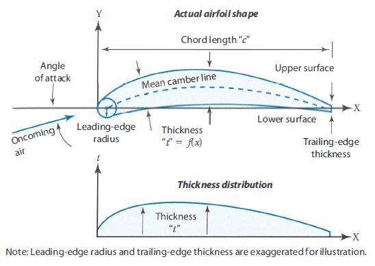
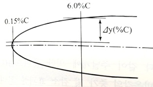
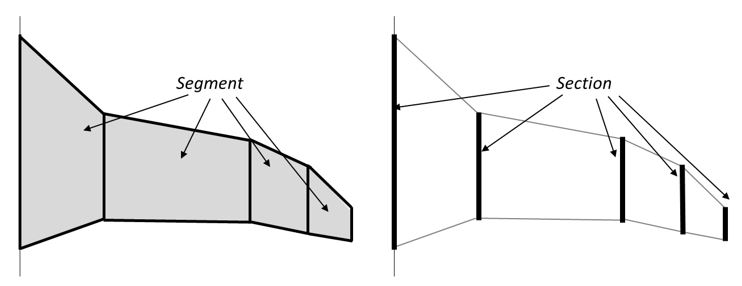
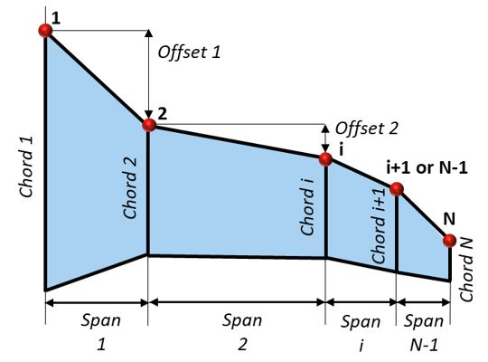

Configuration Theory Manual
This is a theory manual for configuration analysis inside CADE-MDA. It is written by referring to the books:
[1] Aircraft Design : A Conceptual Approach (6th Edition) by Daniel P. Raymer
[2] General Aviation Aircraft Design : Applied Methods and Procedures by Snorri Gudmundsson Appendix C1 : Design of Conventional Aircraft
Appendix D : Geometry of Lifting Surfaces
[3] Development of an Emprically Based Computer Program to Predict the Aerodynamic Characteristics of Aircraft by Roy T. Schemensky
Configuration
The aircraft configuration defines the overall architecture of the aircraft, influencing all multi-disciplinary aspects of its performance and design. An aircraft comprises numerous components, each contributing to the vehicle’s aerodynamic, structural, and operational characteristics. Overall aircraft geometry must be decomposed into its constituent components, allowing for detailed evaluations within each discipline. The aircraft configuration components covered in this geometry analysis module can be found in here.
Goal of Configuration Analysis
The objective of the aircraft configuration analysis is to accurately represent the aircraft geometry, enabling integration with subsequent analysis modules—such as weight and balance, aerodynamics, stability and control, propulsion, and performance assessment—and to deliver accurately calculated geometry parameter values.
Parameterize all kinds of various aircraft configuration
* Parameterization of Aircraft Configuration : Transforming each configuration component into geometric elements and interpreting them using mathematical and geometrical methods.Calculate the parametrized configuration (geometry) parameters accurately
Deliver the required configuration parameters to subsequent analysis modules
Configuration Analysis Module Structure
Airfoil Geometry
Wing Type Geometry
Below wing types are calculated with two main functions :
(1) Calcuate Multi-Segment Wing, (2) Calculate Equivalent Wing
Main Wing
Tail Wing (Stabilizer)
Multi Wings (ex. Canard, Tandem, etc.)
Wingtip or Winglets (Endplate)
Control Surfaces
etc.
Body Type Geometry
Fuselage
Motor Booms
Nacelles
etc.
Landing System Geometry
Landing Gear
Strut
Propulsion Component Geometry
Geometry Tools Module
Aircraft Configuration Plot Module
Airfoil Geometry
The airfoil is often considered the heart of the aircraft, as it influences various aspects such as cruise speed, take-off and landing distances, stall speed, and the overall aerodynamic efficiency of the wing configuration throughout all flight phases. The wing configuration analysis evaluates each section of the entire wing, where each section corresponds to an individual airfoil.

Airfoil Thickness
Airfoil thickness is the maximum distance between upper and lower profiles of airfoil coordinates. Airfoil thickness could be calculated by subtracting Y-axis coordinate of upper and lower surface profile at maximum airfoil thickness location point as below :
Where,
- \(Curve_{Up}\) : Newly created cubic splines of airfoil upper surface profile
- \(Curve_{Lo}\) : Newly created cubic splines of airfoil lower surface profile
- \(x_t\) : X-axis location of airfoil maximum camber
* \(x_t\) is founded by searching maximum value of the thickness(\(t\)) in boundary (minimum x-coordinate value of \(Curve_{Up}\) or \(Curve_{Lo}\) to maximum x-coordinate value of \(Curve_{Up}\) or \(Curve_{Lo}\))
Airfoil Camber
Airfoil camber refers to the maximum distance between the mean camber line and the chord line. The mean camber line is defined as the line connecting the midpoint of the upper and lower surface profiles.
Where,
- \(x_{Camber}\) : X-axis location of airfoil maximum camber
* \(x_{Camber}\) is founded by searching maximum value of the camber(\(camber\)) in boundary (minimum x-coordinate value of \(Curve_{Up}\) or \(Curve_{Lo}\) to maximum x-coordinate value of \(Curve_{Up}\) or \(Curve_{Lo}\))
Generally, an airfoil with camber can generate more lift compared to a flat airfoil, but as the camber increases, drag may also increase.
Airfoil Length
The airfoil length is the perimeter of the given airfoil shape.
Where,
- \(n\) : The number of total airfoil coordinate points
- \(P_{i,0}\) : X-axis coordinate value of i-th airfoil coordinate point
- \(P_{i,1}\) : Y-axis coordinate value of i-th airfoil coordinate point
Airfoil Area
The airfoil area refers to the area of the airfoil section.
Here, \(Area_{Up}\) refers to the area of upper airfoil surface and \(Area_{Lo}\) is the area of lower airfoil surface
Airfoil Leading Edge Parameter (i.e. LE Parameter)
Airfoil leading edge parameter is the thickness factor of airfoil’s leading edge like \(\varDelta y\)(%C) in below figure.

Where,
- \(y_2\) : Y-axis length from point at 6% of airfoil chord length
- \(y_1\) : Y-axis length from point at 0.15% of airfoil chord length
- \(t\) : Airfoil thickness
Wing Type Geometry
The wing might be the most important component of the entire aircraft system or configuration. It primarily serves the role of generating lift as it moves through air or other types of fluid. Wing is a 3-dimension configuration component with a streamlined cross-section known as an ‘airfoil.’
In configuration module inside CADE-MDA, wing type encompasses the main wing, secondary wings, winglets, endplates, tail wings (stabilzers), or any other wing-related configurations. Additionally, the geometry of the control surfaces is also calculated inside the Class of wing geometry calcuation. The key objective of wing type geometry analysis is to ensure it works for any shape of wing configuration. To achieve this, two methodologies are employed for wing type geometry analysis in CADE-MDA.
Multi-Segment Wing Calculation
When analyzing an aircraft’s wing-type geometry, the wing planform shape is commonly assumed to be trapezoidal. However, most aircraft do not have a perfect trapezoidal wing planform shape; in reality, they are often more complex than just a simple “trapezoidal” shape. Therefore, to analyze the wing geometry accurately, the wing should be broken down into multiple segments, each approximating a trapezoidal shape. This methodology is called ‘multi-segment wing calculation’. While representing a wing with too many segments can complicate the analysis, this approach allows for the representation of various wing configurations, which is the primary goal of this configuration module in CADE-MDA.
A wing represented by a multi-segment approach is divided into \(N\) sections, resulting in \(N-1\) trapezoidal-shaped segments. The two images below illustrate the geometry of multi-segment wing.


The wing configuration parameters of a multi-segment wing are calculated using the following equations:
For the 1st segment (\(i=0\)),
\[ b_i=\frac{1}{2}\cdot{b_{ref}}\cdot{\frac{{b_i}_{Loc}}{100}} \]\[ c_i=C_{r}\]\[ c_{i+1}=c_i\cdot\lambda_i \]Following the 1st segment (\(i=1,2,3,...,N-1\))
\[ b_i=\frac{1}{2}\cdot{b_{ref}}\cdot{\frac{{b_i}_{Loc}-{b_{i-1}}_{Loc}}{100}} \]\[ c_{i+1}=c_i\cdot\lambda_i \]
Where,
- \(b_i\) : Span of \(i\)-th segment
- \({b_i}_{Loc}\) : The position of the end span of the \(i\)-th segment within the entire halfspan in percentage
\(c_i\) : Chord length of \(i\)-th section
\(C_{r}\) : Root chord length
\(\lambda_i\) : Taper ratio of \(i\)-th segment